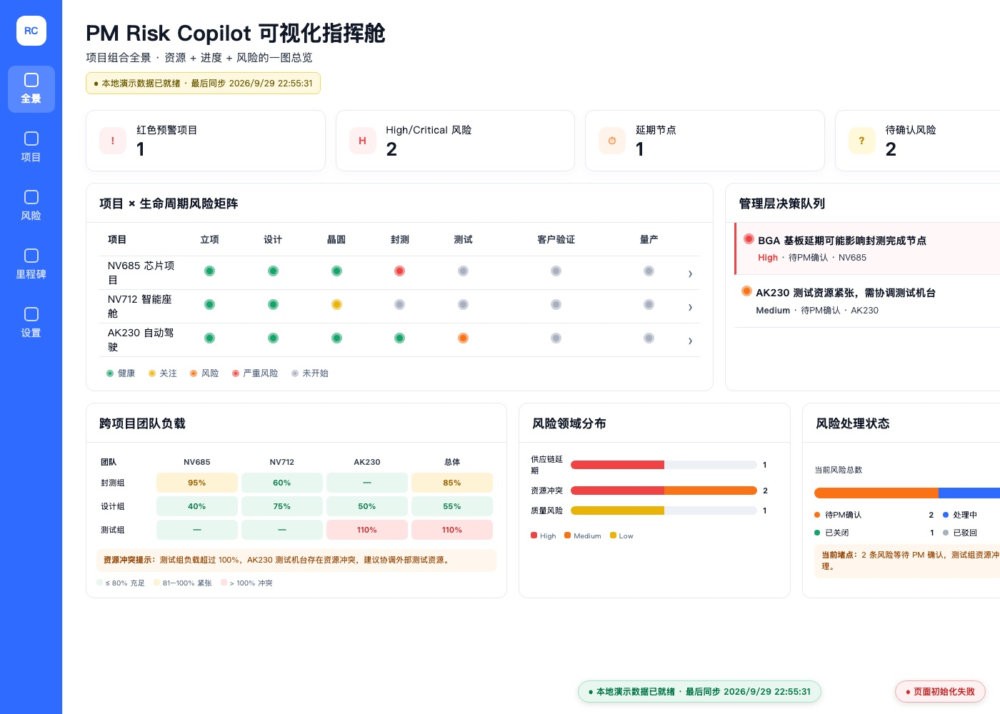
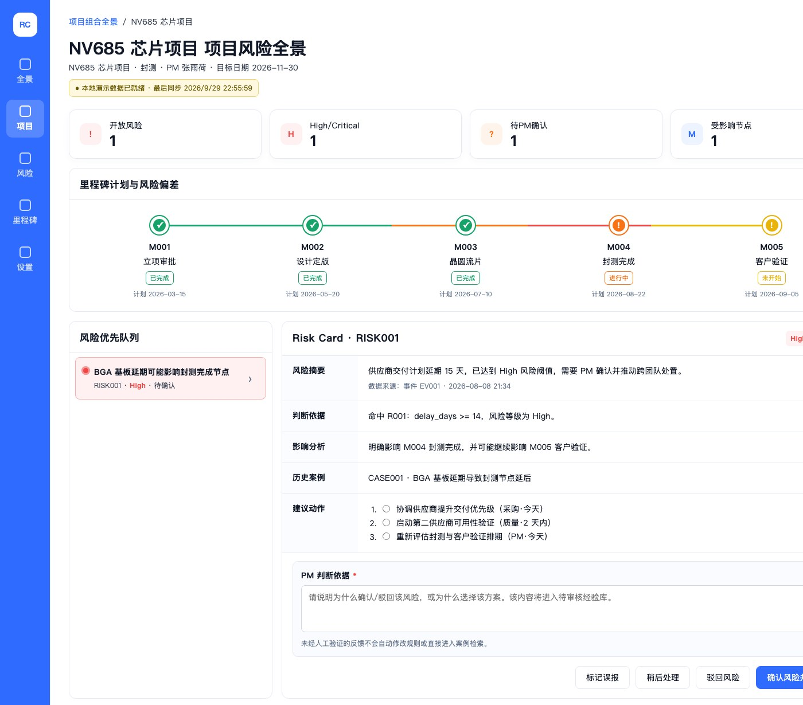

面向芯片研发项目：智能体负责风险感知与影响分析，项目经理作出判断，依据与结论统一沉淀回同一份数据底座。

一颗芯片从立项到量产要走过设计、流片、封测、测试验证等多个阶段，任一环节的延误都会沿链条向后传导。项目管理者面对三个具体困难。
供应商交付、产能排队、测试资源冲突散落在日常沟通里，没有统一的汇集与分级，全局判断只能靠记忆。
风险被识别出来后往往停在讨论层面，缺少明确的判断记录与后续跟踪，同类问题反复出现。
处置判断多依赖个人经验，没有结构化保存，无法在同项目或跨项目之间复用。
演示页无需登录、无需后端，打开即可操作。后端未启动时会自动展示内置演示数据。
首屏是组合视图：红色预警项目、High 级风险、延期节点、待确认风险四项指标；右侧「管理层决策队列」列出等待你拍板的风险。
在「项目生命周期风险矩阵」里点击任一项目行（例如 NV685 芯片项目），进入该项目的节点进度与风险清单。
左侧选择一条风险，右侧 Risk Card 给出风险摘要、命中规则、影响分析、历史案例与三条建议动作——判断有据可依。
在「PM 判断依据」输入框填写理由（至少 5 个字），勾选要执行的建议方案，再点右下的 确认风险并提交判断。也可以选择标记误报、稍后处理或驳回风险。
节点进度、风险清单与 Risk Card 在同一屏内完成，判断不必在多个系统之间跳转。

风险表保存最新状态，判断反馈表只追加历史。两个操作入口读写同一份数据，不再出现两套台账。
四种判断动作都要求填写依据，不足五个字拒绝提交；依据与结论一并入库，可追溯、可复核。
风险等级由确定性规则给出，智能体负责编排与说明。不做不可解释的自动决策，也不替项目经理拍板。